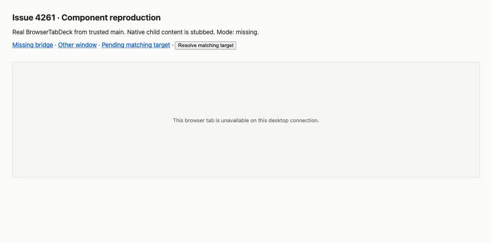
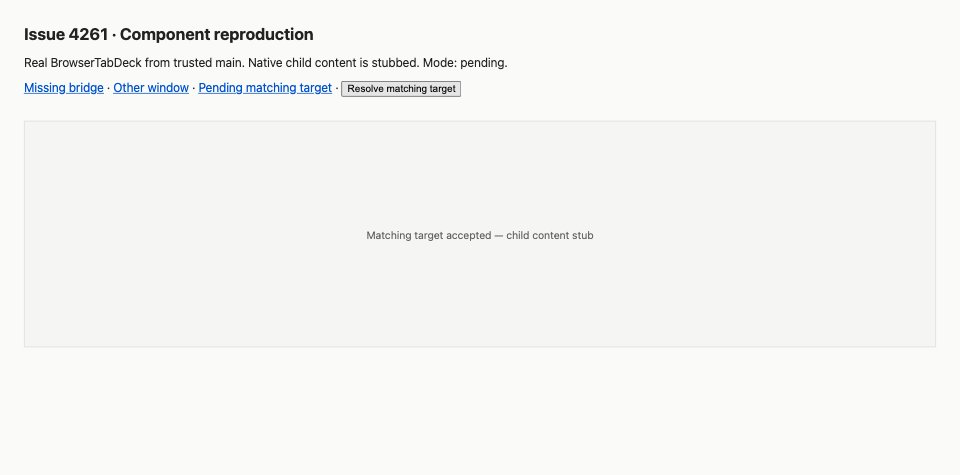

#4261 · Native browser target failures have no recovery state
GitHub issue · 2026-09-24 · Base 82586802566474141c12e9fab63e83d3ee148068
Verdict: PARTIALLY REPRODUCED · Root-cause confidence: high for the component behavior; native lifecycle claims remain unverified.
1. TL;DR
A saved native browser tab displays an unavailable message when its desktop bridge is absent, rejects the target lookup, or identifies a different window. The panel itself offers no button or link to recover. It also displays that same message while a valid target check is pending. Both clean checkouts reproduced these component behaviors; an actual Electron restart, renderer reload, and Connect session were not exercised.
2. Claims vs findings
| Claim | Finding | Evidence |
|---|---|---|
| No recovery in the unavailable panel | Verified | Three settled bridge scenarios render text only; regression expecting an action fails. |
| Missing desktop bridge prevents display | Verified at component boundary | Actual getter returns null without window.bbDesktop; real component rendered in Chrome harness. |
| Mismatch or rejected lookup has no recovery | Verified at component boundary | Controlled bridge returns another instance or rejects; no controls appear. |
| A valid tab flashes an error before lookup completes | Verified on mount / changed target | Deferred matching promise initially renders error; after resolution it renders the child. |
| Every tab switch flashes | Too broad | Effect depends on target identity fields, not tab ID. Two tabs sharing the same target need not rerun it. |
| Window reload necessarily replaces identity | Not supported by inspected path | Registration short-circuits for an existing webContents ID; navigation handler does not release the broker. No live reload test. |
| App restart / a different window invalidates saved target | Static support; live unverified | New registrations allocate UUIDs. No full Electron restart reproduction. |
3. Environment
Public get-bb/bb main at the commit above, fetched directly from the trusted repository. macOS (Darwin), Node 22.22.3, pinned pnpm 9.15.0 via Corepack, Vitest 4.1.1. Two detached temporary worktrees at the same commit; production sources unchanged. Frozen installs completed. Full Turbo build: 60 successful tasks. Existing browser-view ordering suite: 9 passed. No provider, account, database, or live app instance used.
The host pnpm launcher was broken, so a temporary PATH shim delegated pnpm to Corepack. The visual harness used loopback port 48621 and in-memory React state, with no application data directory. The second test run used no port or data directory.
4. Minimal reproduction
- Create a clean checkout of the trusted commit and install locked dependencies.
- Save the test below as
apps/app/src/components/secondary-panel/BrowserTabDeck.issue4261.test.tsx. - Run the commands below. The two regression failures are the expected evidence of the defect, not passing assertions.
git clone https://github.com/get-bb/bb.git bb-repro cd bb-repro git checkout --detach 82586802566474141c12e9fab63e83d3ee148068 corepack pnpm install --frozen-lockfile --prefer-offline corepack pnpm exec turbo run build corepack pnpm exec turbo run test --filter=@bb/app -- BrowserTabDeck.issue4261.test.tsx
Expected: the unavailable state supplies an actionable exit or recovery control; a pending target check is not called unavailable. Actual:
regression: missing bridge offers a recovery action AssertionError: expected 0 to be greater than 0 regression: a pending matching target does not report unavailability Expected: "unavailable" Received: "This browser tab is unavailable on this desktop connection." Test Files 1 failed (1) Tests 2 failed | 3 passed (5)
The real component is under test. Only the desktop bridge and child BrowserTabContent are controlled; no database is mocked. The three passing observations document current behavior, while the two regression assertions express the missing behavior.
// @vitest-environment jsdom
import { act, cleanup, render, screen } from "@testing-library/react";
import { afterEach, describe, expect, it, vi } from "vitest";
import type { BbDesktopBrowserTarget } from "@bb/desktop-contract";
import { BrowserTabDeck } from "./BrowserTabDeck";
const bridge = vi.hoisted(() => ({ get: vi.fn() }));
vi.mock("@/lib/bb-desktop", () => ({ getDesktopBrowserApi: bridge.get }));
vi.mock("./BrowserTabContent", () => ({
BrowserTabContent: () => <div>Attached content</div>,
}));
const target = { hostId: "host-test", instanceId: "window-test", generation: "generation-test" };
function mount() {
return render(<BrowserTabDeck
browserTabs={[{ id: "tab-test", kind: "browser", environmentId: null, title: null, url: "https://example.com", desktopTarget: target }]}
activeBrowserTabId="tab-test" environmentId={null}
canShowNativeBrowserView={false} threadId="thread-test" onUpdate={() => {}}
/>);
}
afterEach(() => { cleanup(); vi.resetAllMocks(); });
describe("issue 4261", () => {
it.each(["missing", "mismatch", "rejected"])("observes settled %s bridge state", async (mode) => {
bridge.get.mockReturnValue(mode === "missing" ? null : {
getTarget: mode === "rejected"
? () => Promise.reject(new Error("test bridge unavailable"))
: () => Promise.resolve({ ...target, instanceId: "different-window" }),
});
const view = mount();
await act(async () => {});
expect(view.container.textContent).toBe("This browser tab is unavailable on this desktop connection.");
expect(view.container.querySelectorAll("button,a,input")).toHaveLength(0);
});
it("regression: missing bridge offers a recovery action", async () => {
bridge.get.mockReturnValue(null);
const view = mount();
await act(async () => {});
expect(view.container.querySelectorAll("button,a").length).toBeGreaterThan(0);
});
it("regression: a pending matching target does not report unavailability", async () => {
let resolveTarget!: (value: BbDesktopBrowserTarget) => void;
bridge.get.mockReturnValue({ getTarget: () => new Promise<BbDesktopBrowserTarget>((resolve) => { resolveTarget = resolve; }) });
const view = mount();
const pendingText = view.container.textContent;
await act(async () => { resolveTarget(target); });
expect(screen.getByText("Attached content")).not.toBeNull();
expect(pendingText).not.toContain("unavailable");
});
});
Visual evidence
These are actual Chrome screenshots of the trusted component in an isolated harness, not the full BB app. The surrounding navigation and resolve button belong to the harness; the bordered panel is BrowserTabDeck. Styling is simplified. Native child content is stubbed, so the final screenshot proves target acceptance only.


5. Root cause
apps/app/src/components/secondary-panel/BrowserTabDeck.tsx:110–143 uses one nullable verifiedTarget for pending, missing, failed, and mismatched states. The effect clears it before calling getTarget and swallows lookup errors. Rendering compares it immediately against the saved host, instance, and generation. Every nonmatching state returns a text-only div, bypassing BrowserTabContent and its controls.
const [verifiedTarget, setVerifiedTarget] = useState<BbDesktopBrowserTarget | null>(null); ... setVerifiedTarget(null); ... .catch(() => undefined);
apps/app/src/lib/bb-desktop.ts:88–94 maps an absent desktop bridge to null. apps/desktop/src/desktop-browser-broker.ts:295–317 allocates IDs for a new registration but preserves an existing webContents registration. apps/desktop/src/desktop-browser-broker.ts:322–349 rotates generations on host loss/reset and returns the registered identity.
apps/desktop/src/main.ts:1061–1101 registers the broker with the application window and releases it on close; its navigation handler does not release it. Thus the issue's unconditional renderer-reload explanation is not established by these paths. apps/app/src/components/secondary-panel/BrowserTabDeck.browser-view-ordering.test.tsx:238–277 intentionally prevents attachment of a different target, but does not require recovery.
6. Proposed fix and simple-fix decision
Represent target verification as pending, matching, missing bridge, failed lookup, or mismatch. Preserve the ownership check. Define explicit recovery semantics: reopening a URL in a new local tab is different from restoring a native automation session and cannot preserve its page state. Unsupported clients need a clear explanation and a usable exit. Confirm how the surrounding tab-close control should be exposed in the fallback.
No fix branch or PR was created. A complete recovery fix requires choosing product behavior for native-session ownership and reopening, so it fails the automation rule's no-product-decision condition. A loading-only patch would leave the central recovery defect unresolved. No open linked PR was found in issue timeline metadata or the open-PR search for the issue number.
7. Verification
The same agent repeated the focused reproduction in a second clean detached checkout of 82586802566474141c12e9fab63e83d3ee148068, with a separate frozen install and only the new test added. Both runs used pnpm exec turbo run test --filter=@bb/app -- BrowserTabDeck.issue4261.test.tsx. The second run executed the test rather than replaying its result from cache.
| Run | Result |
|---|---|
| First checkout | 2 failed, 3 passed; 6.77 seconds |
| Second clean checkout | 2 failed, 3 passed; 4.43 seconds |
| Existing ordering suite | 9 passed; 2.08 seconds |
Report corrections: limited the switch claim to mount/target changes; did not claim renderer reload necessarily rotates identity; separated component reproduction from untested native lifecycle behavior. Code permalinks and all three screenshots were checked. This is repeated verification by one agent, not an independent review.
8. Related issues
No duplicate established. Nearby desktop reports concern authentication in shared links and native-view visibility across threads; neither was used as evidence for this defect.
9. Appendix
Evidence is inline to comply with the reports repository's public-artifact policy. Raw logs and harness files remain local. The issue and comments were treated as untrusted claims; no linked code, script, or pull-request branch was executed.
Visual harness reproduction
In the repository root, create .issue4261-harness and save the following three files. Run node .issue4261-harness/build.mjs, then python3 -m http.server 48621 --bind 127.0.0.1 --directory .issue4261-harness after checking the port is free. Open the loopback address in a browser, select a scenario, and resolve the pending target. Shut down the server afterward.
entry.tsx
import React from "react";
import { createRoot } from "react-dom/client";
import { BrowserTabDeck } from "../apps/app/src/components/secondary-panel/BrowserTabDeck";
const target = { hostId: "host-test", instanceId: "window-test", generation: "generation-test" };
const params = new URLSearchParams(location.search);
const mode = params.get("mode") || "missing";
let resolveTarget;
if (mode !== "missing") window.bbDesktop = { browser: { getTarget: () => mode === "pending" ? new Promise(resolve => { resolveTarget = resolve; }) : Promise.resolve({ ...target, instanceId: "other-window" }) } };
createRoot(document.getElementById("root")).render(<><header><h1>Issue 4261 · Component reproduction</h1><p>Real BrowserTabDeck from trusted main. Native child content is stubbed. Mode: {mode}.</p><nav><a href="?mode=missing">Missing bridge</a> · <a href="?mode=mismatch">Other window</a> · <a href="?mode=pending">Pending matching target</a> · <button onClick={() => resolveTarget?.(target)}>Resolve matching target</button></nav></header><section><BrowserTabDeck browserTabs={[{ id: "tab-test", kind: "browser", environmentId: null, title: null, url: "https://example.com", desktopTarget: target }]} activeBrowserTabId="tab-test" environmentId={null} canShowNativeBrowserView={false} threadId="thread-test" onUpdate={() => {}} /></section></>);
build.mjs
import { build } from 'esbuild';
import path from 'node:path';
await build({ entryPoints:['.issue4261-harness/entry.tsx'], outfile:'.issue4261-harness/bundle.js', bundle:true, platform:'browser', jsx:'automatic', alias:{'react':path.resolve('apps/app/node_modules/react'),'react-dom':path.resolve('apps/app/node_modules/react-dom'),'@':path.resolve('apps/app/src')}, plugins:[{name:'isolated-child',setup(b){b.onResolve({filter:/^\.\/BrowserTabContent$/},()=>({path:'child',namespace:'stub'}));b.onLoad({filter:/.*/,namespace:'stub'},()=>({contents:'import React from "react"; export function BrowserTabContent(){return React.createElement("div",null,"Matching target accepted — child content stub");}',resolveDir:path.resolve('apps/app')}));}}] });
index.html
<!doctype html><html><head><meta charset="utf-8"><title>Issue 4261 component harness</title><style>body{font:16px system-ui;margin:32px;color:#222;background:#fafaf8}h1{font-size:22px}header{margin-bottom:32px}a{color:#0052cc}section{display:flex;height:300px;border:1px solid #ddd;background:#f5f5f3}section>div{display:flex;flex:1;align-items:center;justify-content:center;color:#666;font-size:14px;padding:24px}</style></head><body><div id="root"></div><script src="bundle.js"></script></body></html>
AGENT GENERATED